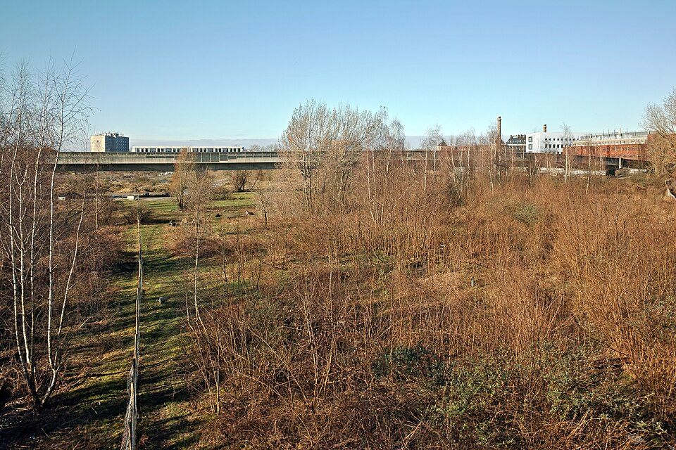

Ce qu'il faut retenir
- Les actions TVF partent d'un diagnostic territorial et d'un besoin local documenté.
- Chaque action vise à remettre en usage une ressource abandonnée ou sous-utilisée.
- Le parcours associe observation, mobilisation, convention, mise en Å“uvre et suivi.
Positionnement
Une association en création, une architecture d'action déjà structurée
TVF ne présente pas de projets réalisés, de partenaires acquis ou de chiffres d'impact propres tant qu'ils ne sont pas vérifiés. La page expose une méthode de travail et des dispositifs à déployer progressivement avec les propriétaires, collectivités, habitants, entreprises, mécènes et associations.
Principe de crédibilité
Chaque action doit partir d'une situation qualifiée : statut du bien, contraintes techniques, besoin local, cadre juridique, financement possible et suivi mesurable.
Chiffres de contexte national
Des enjeux nationaux, Ã traiter territoire par territoire
Ces chiffres décrivent le contexte français. Ils ne constituent pas des résultats TVF.
Huit leviers complémentaires
Chaque action répond à un besoin précis, mais aucune ne fonctionne seule
La force du modèle TVF est de croiser patrimoine vacant, réemploi des matériaux, mobilisation citoyenne, ingénierie territoriale et financement responsable.

Habitat vacant
Objectifs
Publics concernés
En savoir plus
Logements vacants
Identifier les logements durablement inoccupés, comprendre les blocages et préparer des solutions de remise en usage avec les propriétaires, les collectivités et les acteurs locaux.
- Repérer les biens
- Qualifier les causes de vacance
- Orienter vers une solution réaliste
Propriétaires, communes, habitants, acteurs de l'habitat

Usage partagé
Objectifs
Publics concernés
En savoir plus
Bien Solidaire à Usage Partagé
Permettre à un propriétaire de conserver son bien tout en étudiant une rénovation encadrée par une convention d'usage temporaire, proportionnée à l'investissement mobilisé.
- Étudier le bien
- Définir un usage utile
- Construire une convention claire
Propriétaires, associations, collectivités, financeurs

Ressources
Objectifs
Publics concernés
En savoir plus
Matériaux de réemploi
Transformer des matériaux disponibles localement en ressources qualifiées pour des projets validés : rénovation, aménagement, locaux associatifs ou chantiers solidaires.
- Collecter
- Trier
- Affecter aux projets validés
Entreprises, particuliers, collectivités, associations

Centralités
Objectifs
Publics concernés
En savoir plus
Commerces inoccupés
Qualifier les cellules commerciales vacantes et préparer des usages capables de recréer de l'activité : commerce de proximité, atelier, association, tiers-lieu ou boutique temporaire.
- Repérer les vitrines fermées
- Évaluer le potentiel
- Tester des usages de proximité
Communes, propriétaires, commerçants, entrepreneurs locaux

Foncier sobre
Objectifs
Publics concernés
En savoir plus
Friches et espaces abandonnés
Révéler le potentiel des friches, terrains et espaces délaissés en privilégiant des usages sobres, progressifs et utiles : nature en ville, pédagogie, culture, rencontre ou production locale.
- Observer l'état du site
- Identifier les contraintes
- Imaginer des usages temporaires ou durables
Collectivités, habitants, associations, aménageurs

Engagement
Objectifs
Publics concernés
En savoir plus
Solidarité & Insertion
Relier les projets de revitalisation à des parcours d'engagement, de formation et d'insertion, avec une attention aux personnes éloignées de l'emploi et aux habitants volontaires.
- Accueillir les bénévoles
- Construire des missions utiles
- Valoriser les compétences
Bénévoles, jeunes, structures sociales, acteurs de l'emploi

Maillage national
Objectifs
Publics concernés
En savoir plus
Antennes locales
Préparer un réseau d'équipes locales capables d'observer leur territoire, d'animer les coopérations et de faire remonter les besoins dans un cadre national partagé.
- Former des référents
- Mutualiser les outils
- Animer les territoires
Habitants, élus, associations, référents locaux

Financement
Objectifs
Publics concernés
En savoir plus
Financer les projets
Structurer les dossiers afin de mobiliser, uniquement lorsqu'ils sont confirmés, dons citoyens, mécénat, contributions d'entreprises, subventions et financements solidaires.
- Qualifier les besoins
- Préparer le budget
- Publier des informations vérifiées
Mécènes, fondations, entreprises, citoyens, collectivités
Processus d'intervention
Passer d'une situation abandonnée à un projet utile
Signalement ou repérage
Un lieu, un bien ou une ressource est identifié par un habitant, une collectivité, un propriétaire ou l'observatoire.
Diagnostic
TVF vérifie le statut, les contraintes, les risques, la disponibilité, les besoins locaux et les conditions de publication.
Scénario d'usage
Plusieurs usages sont étudiés : logement, commerce, local associatif, jardin, atelier, formation ou occupation temporaire.
Coopération
Les rôles sont formalisés : propriétaire, collectivité, bénévoles, entreprises, financeurs et bénéficiaires.
Mise en Å“uvre
Le projet peut mobiliser travaux, matériaux de réemploi, chantier solidaire, financement ou animation locale.
Suivi
Les résultats sont publiés seulement lorsqu'ils sont réels, datés, vérifiés et rattachés au bon territoire.
Déploiement national
Une carte préparée pour les futurs territoires TVF
La carte illustre l'architecture cible : un premier territoire pilote à Saint-Étienne, puis des territoires à qualifier en métropole et en Outre-mer. Aucun point ne vaut antenne active tant qu'il n'est pas officiellement constitué.
Voir la carte des territoires
Saint-Étienne : territoire pilote
Territoires à qualifier
Outre-mer : développement futur
Scénarios pédagogiques
Exemples de situations possibles, non présentés comme des projets réalisés
Un logement vacant en centre-bourg
Le propriétaire ne sait pas comment financer les travaux. TVF peut étudier un diagnostic, des matériaux de réemploi, une convention d'usage et un usage social temporaire.
Une vitrine commerciale fermée
La commune souhaite éviter une rue inactive. TVF peut aider à qualifier le local, chercher un usage transitoire et préparer une mise en relation avec des porteurs d'activité.
Un stock de matériaux inutilisés
Une entreprise dispose de surplus. TVF ne distribue pas librement : les ressources sont vérifiées, tracées puis affectées à un projet validé.
FAQ
Questions fréquentes
TVF intervient-elle déjà partout en France ?
Non. Territoires Vivants France est en structuration. L'ambition nationale est présentée, mais les antennes et projets seront publiés uniquement lorsqu'ils seront constitués et vérifiables.
Peut-on proposer un logement, un commerce ou un terrain ?
Oui. Une proposition peut être transmise pour qualification. Le bien n'est jamais publié comme projet TVF tant que le statut, l'accord du propriétaire, les risques et les conditions d'usage ne sont pas vérifiés.
La Banque de Matériaux distribue-t-elle gratuitement les ressources ?
Non. Les matériaux sont intégrés à une stratégie de valorisation territoriale. TVF décide de leur affectation vers des projets validés, dans un cadre de coopération clair.
Comment les résultats seront-ils mesurés ?
Les indicateurs TVF seront publiés après collecte réelle : signalements qualifiés, biens accompagnés, matériaux orientés, bénévoles mobilisés, projets validés et territoires couverts.
Agir avec méthode
Vous avez un lieu, une ressource ou une compétence à proposer ?
TVF peut qualifier la situation, orienter vers le bon dispositif et préparer une coopération adaptée au territoire.
Des données publiques pour cadrer l'action, pas pour inventer l'impact
Les chiffres cités décrivent des enjeux nationaux. Les résultats propres à Territoires Vivants France seront publiés uniquement après enregistrement, validation et rattachement territorial.
Rejoindre TVF
Quel est votre rôle dans la revitalisation du territoire ?
Chaque acteur peut contribuer à sa manière : signaler, proposer, financer, accueillir, réemployer, documenter ou porter un projet local.
CollectivitéDevenir territoire partenaireDiagnostic, données, coopération, indicateurs.
PropriétaireProposer un bienLogement, commerce, bâtiment ou terrain à qualifier.
EntrepriseContribuer à l'économie circulaireMatériaux, compétences, locaux, mécénat.
AssociationConstruire une action localeBesoins, publics, bénévolat, animation.
CitoyenSignaler une ressourceLieu vacant, matériau disponible, besoin local.
InvestisseurFinancer un impact vérifiableProjet qualifié, budget, reporting, transparence.
BénévoleRejoindre le mouvementMissions, chantiers, documentation, terrain.
FAQ
Questions fréquentes sur cette action
Des réponses courtes pour comprendre le cadre, les limites et les prochaines étapes avant de contacter TVF ou de proposer une action.
Une action TVF correspond-elle toujours à un chantier ?
Non. Une action peut commencer par un repérage, un diagnostic, une mise en relation, une convention ou une orientation vers le bon dispositif avant toute intervention physique.
Les exemples de situations sont-ils des projets réalisés ?
Non lorsqu'ils sont présentés comme scénarios pédagogiques. Les réalisations ne seront publiées qu'après validation et documentation.
Comment choisir la bonne action ?
Le choix dépend du sujet principal : logement, commerce, friche, matériaux, insertion, antenne locale ou financement. TVF peut orienter vers le parcours adapté.